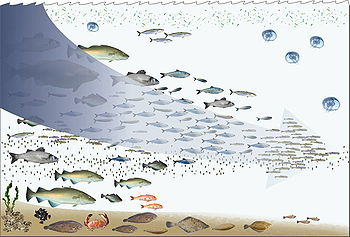
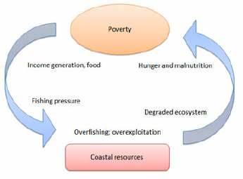
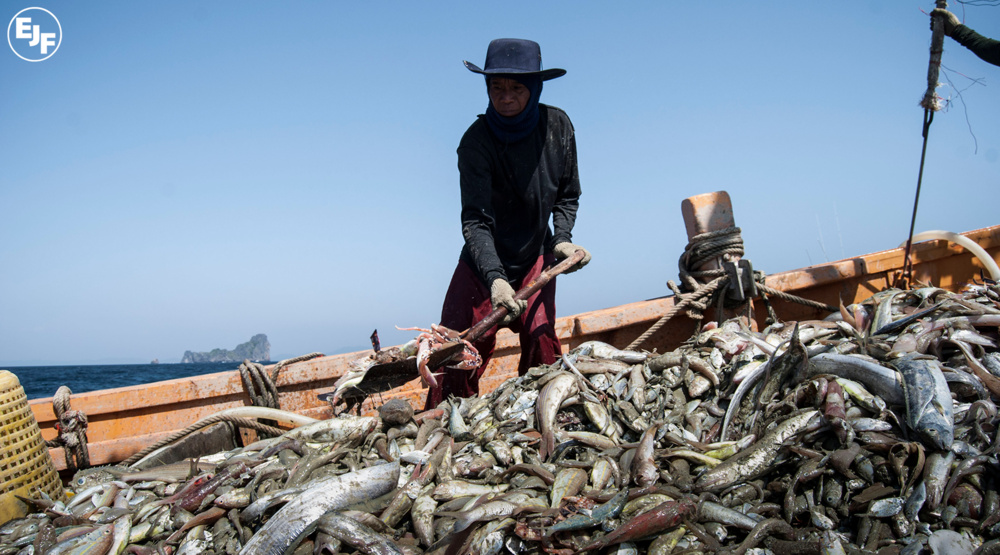

Overfishing disrupts marine ecosystems by depleting fish populations faster than they can replenish. This imbalance can lead to cascading effects throughout the food web, affecting predator-prey dynamics and altering the structure of marine habitats. For instance, the decline of large predatory fish can trigger an increase in smaller prey species, which in turn affects their own prey and competitor species.
Overfishing has significant economic implications, especially for communities reliant on fisheries for livelihoods. Depleted fish stocks lead to reduced catches, impacting both commercial and subsistence fishing industries. This loss of income can affect entire communities that depend on fishing for food security and economic stability, leading to unemployment and poverty in some regions.
Overfishing threatens global food security, particularly for coastal communities and developing countries that rely heavily on fish as a primary source of protein. As fish stocks decline, the availability of affordable and nutritious seafood decreases, exacerbating food shortages and malnutrition in vulnerable populations who lack alternative sources of protein.
Overfishing contributes to environmental degradation beyond depletion of fish stocks. Practices like bottom trawling, used to capture fish, can damage fragile marine habitats such as coral reefs and seagrass beds. By disturbing these habitats, overfishing threatens the biodiversity and resilience of entire marine ecosystems, reducing their ability to recover from other environmental stresses like climate change.

Overfishing is exacerbated by inadequate fisheries management and enforcement of regulations. Issues such as illegal, unreported, and unregulated (IUU) fishing further strain efforts to sustainably manage fish stocks. Effective governance, international cooperation, and scientific research are essential to address overfishing and implement sustainable fisheries practices that ensure the long-term health of marine ecosystems and fisheries-dependent communities.
